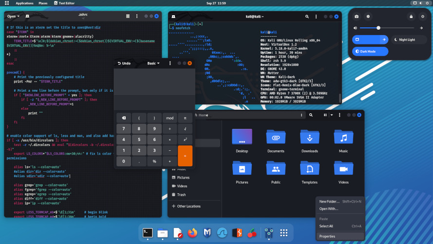

Laboratory and the Cyber Security Management System
Context :
I was working online for the company Neo Docto in computer security consulting. One day were contacted by a major
financial services company following a series of disturbing hacking incidents. Hackers had managed to break into their
internal network and appeared to be accessing sensitive information.
The hunt begins:
Me and my team quickly took control of the situation. They began with an in-depth analysis of network activity logs and
discovered unusual patterns of accessing user accounts at unusual times. This gave them a first lead to begin their
investigation.
Forensic analysis:
Based on the collected data, I used my skills in digital forensic analysis to reconstruct the path of hackers through
the corporate network. He was able to identify the attack methods used, including the use of sophisticated social
engineering techniques to obtain employee credentials.
The pursuit :
The hackers appeared to be using evasive tactics to evade detection. However, me and my team were determined to stop
them. Behavioral analysis techniques were used to anticipate the hackers' next moves.
Discovery :
During their hunt, a command and control (C&C) server used by the hackers to orchestrate their attacks was discovered.
By closely studying the C&C, they discovered links to other recent attacks in the financial sector. This reinforced
their belief that we are tracking a group of organized and sophisticated hackers.
The counterattack:
After acquiring enough information, me and my team decided to take action. we deployed countermeasures to isolate
hackers in the network and worked with the company's internal team to remediate exploited vulnerabilities.
The collaboration :
As we progressed in our investigation, we worked closely with corporate security teams. We shared our knowledge and
skills to strengthen the company's overall security posture.
The outcome :
Thanks to the diligence, expertise and cooperation of our various teams, we succeeded in neutralizing hackers and
securing the company's network. Their efforts helped recover stolen data, strengthen the company's defenses and prevent
future similar attacks.
Technologies:
- - Python
- - Kali linux
- - Django + Django REST Framework
- - Dart
- - React JS
- - Java
- - Java
- - Postgres
- - AWS (S3 & RDS)
- - Zingcharts - Trending & graphing test results
- - Google Maps API
- - XML2PDF - PDF generator
Laboratory Admin Dashboard

Sample ID Form

Results Input Fields

PDF Report (Automaticly Generated)

Customer Dashboard